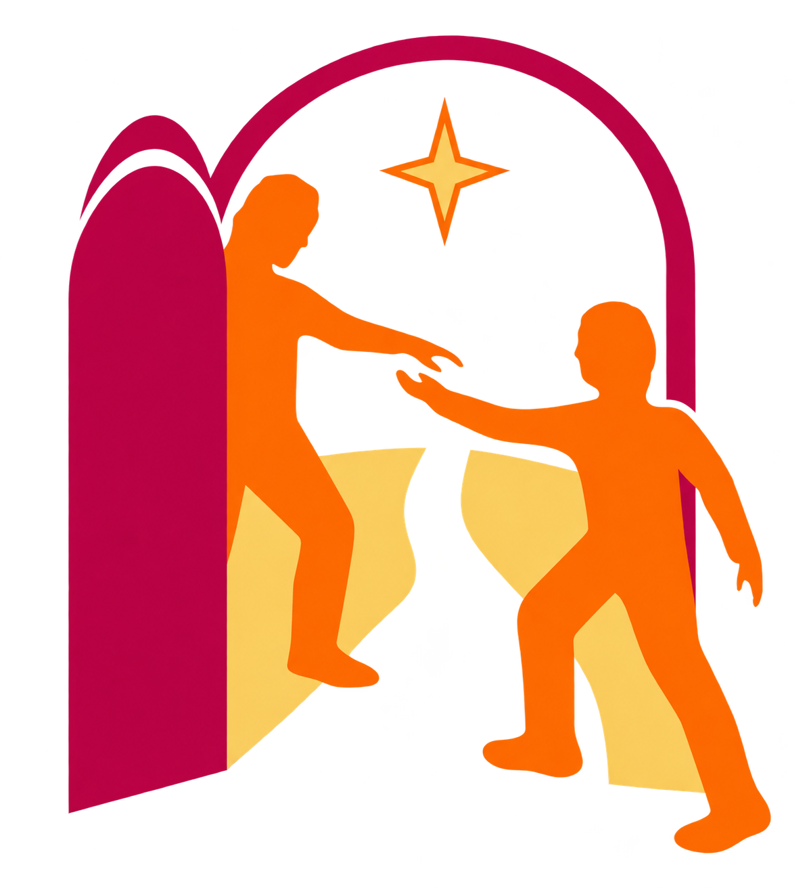

✝MENSAJE OFICIALvatican.va
Mensaje del papa León XIV
Mensaje para la X Jornada Mundial de los Pobres, que se celebra el 15 de noviembre de 2026.
Leer el mensaje completo ↗La fraternidad comienza
con un encuentro.
Un lugar para descubrir y compartir las iniciativas que parroquias, comunidades y organizaciones realizan por la Jornada Mundial de los Pobres 2026 en todo el mundo.
JORNADA MUNDIAL DE LOS POBRES 2026
(cf. Sal 14,6)

— UNA RED DE ESPERANZA
En distintos países, muchas personas se reúnen para acompañar, escuchar y compartir con quienes más lo necesitan. Este directorio reúne enlaces a sus publicaciones originales para dar visibilidad a esas iniciativas, respetando siempre a sus autores.
— PARA CONOCER LA JORNADA
Recursos útiles para conocer, reflexionar y profundizar en el sentido de la Jornada Mundial de los Pobres 2026. Cada enlace te lleva a su fuente original.
Mensaje para la X Jornada Mundial de los Pobres, que se celebra el 15 de noviembre de 2026.
Leer el mensaje completo ↗Archivo institucional con enlaces a materiales de ediciones anteriores de la Jornada.
Visitar la página ↗Una invitación franciscana a realizar acciones durante la semana del 9 al 15 de noviembre de 2026.
Subsidio Pastoral en PDF compartido por Cáritas Mexicana para acompañar la preparación de la Jornada.
Consultar el subsidio PDF ↗
Hay momentos en los que la Iglesia necesita volver a mirar lo esencial. No solamente preguntarse qué hace, sino también a quién mira, a quién escucha y a quiénes puede estar dejando al margen.
Ver video en YouTube ↗— UNA RED DE ESPERANZA
Conoce las publicaciones más recientes de las comunidades que participan en la Jornada.
Busca por país, ciudad, organización o actividad. Cada enlace lleva a su fuente original.
Prueba con otro país, ciudad, organización o término de búsqueda.
✓ Solo se incorporarán enlaces revisados y relacionados directamente con la Jornada Mundial de los Pobres.
— HAZ VISIBLE TU COMUNIDAD
¿Tu parroquia, movimiento u organización prepara una actividad por la Jornada? Ayúdanos a darla a conocer. Comparte su publicación oficial para que personas de otros lugares puedan descubrirla.
TU COMUNIDAD TAMBIÉN CUENTA
Una publicación puede inspirar a otras comunidades. Comparte el enlace de tu iniciativa y ayúdanos a extender su alcance.
— SOBRE ESTE ESPACIO
Este directorio independiente facilita el descubrimiento de actividades vinculadas a la Jornada Mundial de los Pobres. Los contenidos pertenecen a sus respectivas parroquias, movimientos, organismos y autores.
No sustituimos las fuentes originales: cada publicación conserva su enlace de procedencia. La inclusión de una iniciativa no implica aval institucional ni convierte este espacio en un sitio oficial de la Jornada.